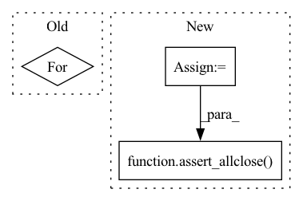

Pattern ID :10305

Before Change
angles[:, 1] = rnd.uniform(low=-np.pi / 2, high=np.pi / 2, size=(n,))
angles[:, 2] = rnd.uniform(low=-np.pi, high=np.pi, size=(n,))
for seq_tuple in permutations("xyz"):
// Extrinsic rotations
seq = "".join(seq_tuple)
assert_allclose(angles, Rotation.from_euler(seq, angles).as_euler(seq))
// Intrinsic rotations
seq = seq.upper()
After Change
// Extrinsic rotations
seq = "".join(seq_tuple)
rotation = Rotation.from_euler(seq, angles)
angles_quat = rotation.as_euler(seq)
angles_mat = rotation._as_euler_from_matrix(seq)
assert_allclose(angles, angles_quat, atol=0, rtol=1e-12)
assert_allclose(angles, angles_mat, atol=0, rtol=1e-12)
test_stats(angles_quat - angles, 1e-15, 1e-14)
test_stats(angles_mat - angles, 1e-15, 1e-14)
// Intrinsic rotations
seq = seq.upper()
rotation = Rotation.from_euler(seq, angles)
angles_quat = rotation.as_euler(seq)
angles_mat = rotation._as_euler_from_matrix(seq)
assert_allclose(angles, angles_quat, atol=0, rtol=1e-12)
assert_allclose(angles, angles_mat, atol=0, rtol=1e-12)
test_stats(angles_quat - angles, 1e-15, 1e-14)
test_stats(angles_mat - angles, 1e-15, 1e-14)
In pattern: SUPERPATTERN
Frequency: 4
Non-data size: 3
Instances
Fragment ID: 36289320
Project Name: scipy/scipy
Commit Name: 316159b15927f5c4eaef6b1092464c7266bea489
Time: 2022-12-07
Author: 15084103+evbernardes@users.noreply.github.com
File Name: scipy/spatial/transform/tests/test_rotation.py
M Class Name: AnonimousClass
N Class Name: AnonimousClass
M Method Name: test_as_euler_asymmetric_axes(0)
N Method Name: test_as_euler_asymmetric_axes(0)
M Parent Class:
N Parent Class:
M File Name: scipy/spatial/transform/tests/test_rotation.py
N File Name: scipy/spatial/transform/tests/test_rotation.py
M Start Line: 580
M End Line: 594
N Start Line: 588
N End Line: 615
'>
Before Change
pass_mode=pass_mode,
)
assert len(loglikelihoods) == len(sequences)
for loglikelihood in loglikelihoods:
assert loglikelihood <= 0 or np.isnan(loglikelihood)
@pytest.mark.parametrize("batch_size, tokens_list, pass_mode", test_params_fasta)
After Change
normalize=True,
)
assert len(loglikelihoods) == len(sequences)
results = loglikelihoods_results[test_trans._model_dir][params]
assert_allclose(loglikelihoods, results, rtol=0.01)
@pytest.mark.parametrize("batch_size, tokens_list, pass_mode", test_params_fasta)
def test_loglikelihoods_type_shape_and_range_fasta(
'>
Fragment ID: 36289288
Project Name: deepchainbio/bio-transformers
Commit Name: a5f68832872a947fe88e99f19a678bee9d15b0c7
Time: 2021-07-09
Author: a.delfosse@instadeep.com
File Name: biotransformers/tests/test_loglikelihoods.py
M Class Name: AnonimousClass
N Class Name: AnonimousClass
M Method Name: test_loglikelihoods_type_shape_and_range(7)
N Method Name: test_loglikelihoods_type_shape_and_range(5)
M Parent Class:
N Parent Class:
M File Name: biotransformers/tests/test_loglikelihoods.py
N File Name: biotransformers/tests/test_loglikelihoods.py
M Start Line: 19
M End Line: 29
N Start Line: 16
N End Line: 28
'>
Before Change
angles[:, 2] = rnd.uniform(low=-np.pi, high=np.pi, size=(n,))
for axis1 in ["x", "y", "z"]:
for axis2 in ["x", "y", "z"]:
if axis1 == axis2:
continue
// Extrinsic rotations
seq = axis1 + axis2 + axis1
After Change
seq = seq.upper()
rotation = Rotation.from_euler(seq, angles)
angles_quat = rotation.as_euler(seq)
angles_mat = rotation._as_euler_from_matrix(seq)
assert_allclose(angles, angles_quat, atol=0, rtol=1e-13)
assert_allclose(angles, angles_mat, atol=0, rtol=1e-9)
test_stats(angles_quat - angles, 1e-16, 1e-14)
test_stats(angles_mat - angles, 1e-15, 1e-13)
'>
Fragment ID: 36289261
Project Name: scipy/scipy
Commit Name: 316159b15927f5c4eaef6b1092464c7266bea489
Time: 2022-12-07
Author: 15084103+evbernardes@users.noreply.github.com
File Name: scipy/spatial/transform/tests/test_rotation.py
M Class Name: AnonimousClass
N Class Name: AnonimousClass
M Method Name: test_as_euler_symmetric_axes(0)
N Method Name: test_as_euler_symmetric_axes(0)
M Parent Class:
N Parent Class:
M File Name: scipy/spatial/transform/tests/test_rotation.py
N File Name: scipy/spatial/transform/tests/test_rotation.py
M Start Line: 597
M End Line: 616
N Start Line: 626
N End Line: 653
'>
Before Change
pass_mode=pass_mode,
)
assert len(loglikelihoods) == len(lengths_sequence_fasta)
for loglikelihood in loglikelihoods:
assert loglikelihood <= 0 or np.isnan(loglikelihood)
After Change
normalize=True,
)
assert len(loglikelihoods) == len(lengths_sequence_fasta)
results = loglikelihoods_fasta_results[test_trans._model_dir]
assert_allclose(loglikelihoods, results, rtol=0.01)
'>
Fragment ID: 36289277
Project Name: deepchainbio/bio-transformers
Commit Name: a5f68832872a947fe88e99f19a678bee9d15b0c7
Time: 2021-07-09
Author: a.delfosse@instadeep.com
File Name: biotransformers/tests/test_loglikelihoods.py
M Class Name: AnonimousClass
N Class Name: AnonimousClass
M Method Name: test_loglikelihoods_type_shape_and_range_fasta(7)
N Method Name: test_loglikelihoods_type_shape_and_range_fasta(6)
M Parent Class:
N Parent Class:
M File Name: biotransformers/tests/test_loglikelihoods.py
N File Name: biotransformers/tests/test_loglikelihoods.py
M Start Line: 35
M End Line: 43
N Start Line: 36
N End Line: 51